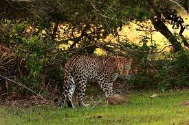

A Guide to Island Tours
Nestled along the western coast of Sri Lanka, Kalpitiya is a hidden gem for travelers seeking pristine natural beauty and unique experiences. One of the most captivating aspects of Kalpitiya is its array of enchanting islands waiting to be explored. From tranquil lagoons to vibrant coral reefs, here's a guide to island tours that surround Kalpitiya, offering a glimpse into the region's rich marine and cultural heritage.
Baththalangunduwa Island:
Baththalangunduwa, often referred to as "Battu," is a picturesque island located off the coast of Kalpitiya. Accessible by boat, this island is renowned for its traditional fishing communities and vibrant cultural life. Visitors can take a tour of the island to witness the daily life of fishermen, explore quaint villages, and indulge in fresh seafood delicacies.Wilpattu National Park:
 Although not an island in itself, Wilpattu National Park is a must-visit destination near Kalpitiya. Known for its diverse wildlife and scenic landscapes, Wilpattu is home to numerous species including leopards, elephants, and exotic birdlife. Island tours often include a safari experience in Wilpattu, allowing travelers to immerse themselves in the natural wonders of Sri Lanka.Mannar Island:
Venture further north from Kalpitiya, and you'll discover Mannar Island, a historic and culturally rich destination. Mannar is famous for its ancient baobab trees, pristine beaches, and historical sites such as the Mannar Fort. Island tours to Mannar offer a blend of natural beauty and heritage exploration, making it a captivating stop for history enthusiasts and nature lovers alike.Vankalai Sanctuary:
For those interested in birdwatching and eco-tourism, Vankalai Sanctuary is a hidden paradise near Kalpitiya. This coastal wetland sanctuary is a haven for migratory birds, including flamingos, pelicans, and herons. Island tours to Vankalai offer a serene escape into nature, with opportunities for birdwatching, photography, and tranquil boat rides through mangrove forests.Kalpitiya Peninsula:
 While not an island, the Kalpitiya Peninsula deserves a mention for its stunning landscapes and diverse ecosystems. Island tours around Kalpitiya often include exploration of the peninsula's attractions, such as the Kalpitiya Lagoon, Dutch Bay, and the Bar Reef Marine Sanctuary. Visitors can enjoy activities like snorkeling, dolphin watching, and relaxing beach picnics along the peninsula's pristine shores.
While not an island, the Kalpitiya Peninsula deserves a mention for its stunning landscapes and diverse ecosystems. Island tours around Kalpitiya often include exploration of the peninsula's attractions, such as the Kalpitiya Lagoon, Dutch Bay, and the Bar Reef Marine Sanctuary. Visitors can enjoy activities like snorkeling, dolphin watching, and relaxing beach picnics along the peninsula's pristine shores.
Best Time for Island Tours in Kalpitiya:
The best time to embark on island tours around Kalpitiya is during the dry season, which typically lasts from November to April. During this period, the weather is pleasant, and sea conditions are ideal for boat rides and water-based activities. However, some islands may have specific visiting seasons or restrictions, so it's advisable to check with local tour operators for the latest information and tour availability. In conclusion, Kalpitiya's island tours offer a blend of natural beauty, cultural immersion, and adventurous experiences. Whether exploring fishing communities on Baththalangunduwa or marveling at wildlife in Wilpattu, each island tour unveils a unique facet of Sri Lanka's coastal charm, leaving travelers with unforgettable memories of this coastal paradise.NOTE:- If you like to Island Tours, you can know about the prices and packages from the hotels mentioned on our home page and can book.